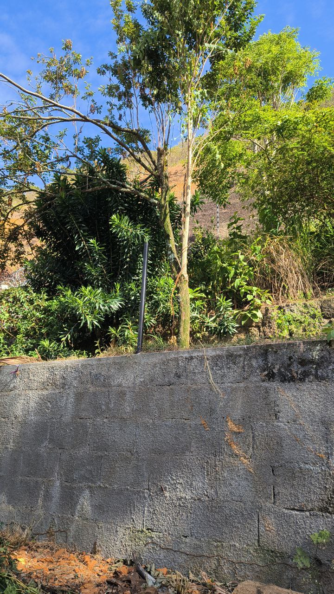

O lugar, o projeto e seus registros.
Fotografias e desenhos ajudam a acompanhar a evolução da proposta. Cada conjunto identifica sua origem e a etapa que representa.
Fotografias e desenhos ajudam a acompanhar a evolução da proposta. Cada conjunto identifica sua origem e a etapa que representa.
Em 20 de janeiro de 2026, Rafael relatou ter firmado um contrato para construir dois lofts e estar aguardando o primeiro depósito. Apresentou o trabalho como uma primeira experiência prática para a IMOBX e descreveu um terreno de aclive acentuado.
O conjunto reúne uma fotografia do terreno e seis imagens do estudo arquitetônico. O relato e os desenhos ajudam a definir o que acompanhar: escopo, custos, sequência da obra e comparação entre o previsto e o realizado. A situação atual da obra, o recebimento do depósito e a relação com os futuros contratos de moradia ainda precisam de atualização.
O valor de construção informado é de US$27.777 para os dois lofts juntos. A divisão simples resulta em US$13.888,50 por loft. O escopo incluído e o custo final realizado precisam constar nos registros da obra.



As imagens registram um estudo de projeto. Medidas finais, aprovação, responsabilidade técnica e execução devem ser identificadas nos respectivos documentos. A data do relato é a da mensagem de Rafael; o nome do arquivo recebido não comprova a data de captura das imagens.
Rafael imaginou casas duplex de 45 m² voltadas para uma área comum, com energia solar, pomar, espaço de brincar e duas pequenas salas de estudo. A proposta procura reunir um caminho até a casa própria, menores despesas de moradia e lugares de convivência e aprendizagem.

Casas e pátio: entradas e janelas voltadas para o espaço comum procuram facilitar a convivência e a atenção ao entorno.
Energia e pomar: a proposta combina geração solar e árvores frutíferas. Equipamentos, despesas e manutenção precisam entrar no orçamento.
Espaço para aprender: duas salas de estudo ofereceriam uma alternativa a estudar dentro de uma casa pequena.
Decisões compartilhadas: moradores devem participar das regras de uso, cuidado e manutenção dos espaços comuns.
O plano de novembro previa pelo menos 36 casas construídas em conjunto. O estudo dos dois lofts, relatado em janeiro, é outro caso, com escopo e custo próprios. Os dois ajudam a organizar uma evolução por etapas.
As duas fotografias de bairros foram fornecidas pela equipe. Autoria, data e localização exata ainda precisam de confirmação. Os originais recebidos conservam as setas azuis; as versões com círculos tiveram edição generativa. São imagens de contexto, sem identificação verificada de imóveis do piloto ou famílias atendidas.


A equipe também forneceu uma captura de anúncio da Calper para um studio. É publicidade de terceiros, com preço anunciado em reais. Serve como referência para discussão; não é projeto, preço de venda ou parceria da IMOBX. A data e as condições atuais do anúncio não foram verificadas.